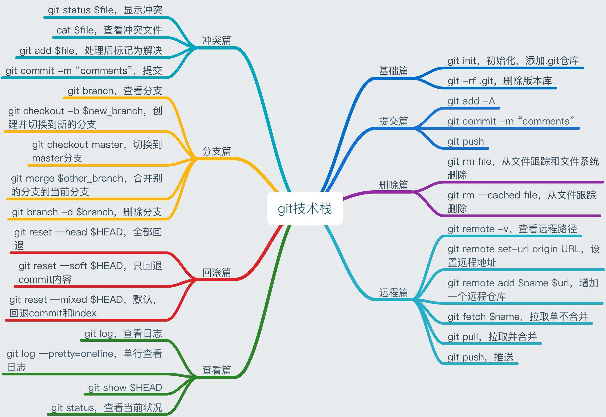
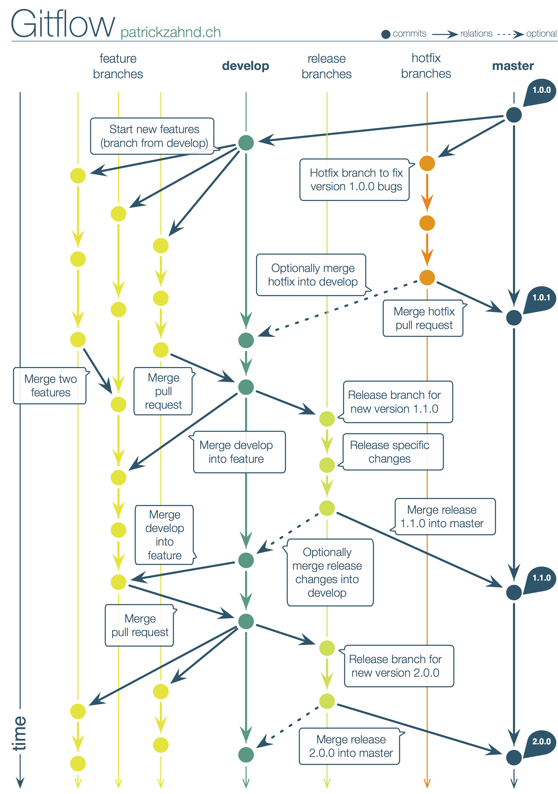

Git 的常用命令
untracked - 新增的文件，Git 根本不知道它的存在
not staged - 被索引过又被修改了的文件
staged - 通过 git add 后被即将被提交的文件
git reflog
版本回退 git reset (只影响本地分支):
- git reset –hard versionId: 放弃修改，删除新添加的文件等
- git reset –soft verisionId: 保留修改
放弃修改: git checkout – filename
创建分支: git branch branchName
切换分支: git checkout branchName
创建并切换分支: git checkout -b branchName
merge 和 rebase
都用于合并分支，但是有区别：rebase 会把提交移动到被合并的分支后面，创建一个线性提交日志，但看不到具体是哪个分支的修改
使用 git fetch 和 git pull 都可以更新远程仓库的代码到本地，但是它们之间还是有区别
git fetch: 从远程获取最新的版本到本地分支上 (不修改 HEAD)，之后再进行比较，决定是否合并
1
2
3git fetch origin master # 从远程的 origin 仓库的 master 主分支更新最新的版本到origin/master分支上
git diff master origin/master # 比较本地的master分支和origin/master分支的差别
git merge origin/master # 合并内容到本地 master 分支git pull：从远程获取最新版本并 merge 到本地分支 (git fetch 更安全一些)
1
git pull origin master # 相当于 git fetch 和 git merge 的合并




搭建 Git 服务器
初始化仓库用命令
git init --bare sample.git而不是git init
不需要手动在 git 服务器中添加新用户或新仓库，gitolite 的用户，仓库和权限规则是使用一个名为 gitolite-admin 的特殊仓库进行维护，需通过修改该仓库并合并 push 到服务器中:
- 创建新仓库只需要修改
gitolite-admin/conf/gitolite.conf，而不是用 git init –bare 命令- 添加新用户只需要把用户的 ssl 公钥如 biao.pub 放到
gitolite-admin/keydir，biao 是用户名，在 gitolite.conf 里用到
中文名乱码
例如使用 git status 输出 modified: “template-web-gradle/doc/\344\275\277\347\224\250\350\257\264\346\230\216.md”，中文名的路径显示不正常，调用 git config core.quotepath false 后就可以了.
名字大小写不敏感
Git 是大小写不敏感的，导致跨操作系统共享的 Git 仓库就会遇到上面的情况。如果重命名的文件或文件夹只有大小写不同，那么对 Git 来说甚至都没有变化。下面介绍解决 Git 大小写不敏感导致的重命名无效的办法: 先将文件夹重命名为临时文件夹，然后再从临时文件夹恢复成正常文件夹。
注意: 中间需要先 commit 一次，否则会存在两份文件夹！
下面以重命名 Default-CMD.png 为 default-cmd.png 为例:
1 | $ git mv Default-CMD.pngs Default-CMD.bak.png |
换行符
强制使用 LF 而不使用 CRLF:
1 | # 提交检出均不转换 |
忽略本地修改
添加到 .gitignore 里忽略的文件会影响到 repo，有时希望修改的文件不被提交到 repo，只是本地修改使用，可以使用下面的命令:
1 | 忽略: |
1 | 快捷命令: |
更新分支列表
本地分支列表和服务器的很可能不一样，执行下面的命令把 orign 上的分支列表更新到本地:
1 | git remote update origin --prune |
全局忽略文件
每个项目都有一个 .gitignore 比较麻烦，可以配置全局忽略文件:
编辑忽略文件:
vi ~/.gitignore_global指定忽略文件:
1
2
3# for Mac OS X System Files
.DS_Store
Thumbs.db使配置生效:
git config --global core.excludesfile ~/.gitignore_global
参考资料
- 一入前端深似海，从此红尘是路人系列第十弹之如何合理利用Git进行团队协作 (一)
- 一入前端深似海，从此红尘是路人系列第十一弹之如何合理利用Git进行团队协作 (二)
- 解决 Git 重命名时遇到的大小写不敏感的问题
- 换行符 LF 与 CRLF 转换问题
- How do I configure git to ignore some files locally?
- Git 命令的进阶和复习 (带动图效果)
- 保持清洁的 Git 提交记录，三招就够了
git commit --amend -m "msg"git commit --amend --no-edit（–no-edit 很好用，不改变 commit id 和 commit message）
- 45 个 GIT 经典操作场景，专治不会合代码
- Permission denied (publickey) 解决办法
- 合并多个 commit 为一个 commit，减少垃圾 commit: git squash
git rebase -i HEAD~3(3 是要合并的 commit 数量，视情况而定)- 修改 pick 为 squash 并留下一个 pick (:wq 保存退出)
- 修改 commit message (注释掉不需要的，可添加或者修改 message, :wq 保存退出)